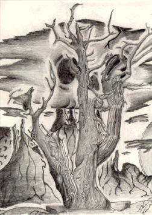

Student Project
Manny

Trees are a very important part of my life. They lend a sense of peace and security in the midst of a chaotic world. When I'm walking in the forest by myself, with the sunlight reflecting off the leaves and the smell of the pine around me, I feel like I'm alone with the world. I feel as if everything in the bustling atmosphere of humans is but a fair shadow or a faint brief memory of a harsh time. Trees are the very essence of god. When I'm within trees, a real sense of wholeness and quiet happiness is mine.
-Manny
c. Manny
ALbert Lowry High School
Winnemucca, Nevada USA
Pencil on Paper 9 "X12"
Bristlecone Pine
Latin Name: Pinus Aristata
Age: 4,600 years
Circumference: TBA
Location: Great Basin National Park
Ely, Nevada
 Return to Main Page
Return to Main Page
June Julian jj68@nyu.edu